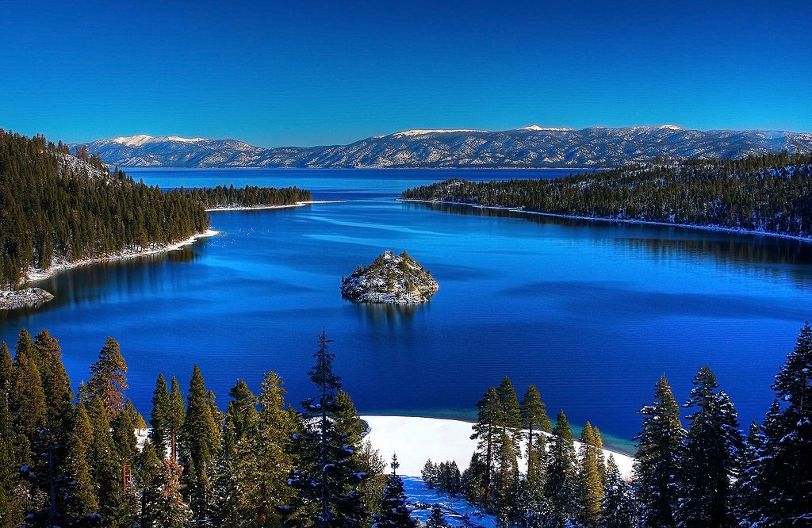

Clipping paths restrict drawing to a particular area of the canvas. Think of clipping paths as masks - areas where the mask is empty show through, while areas where the mask is opaque do not.
Any path can be a clipping path. You simply draw the path as normal and then call the context's clip() function to create one.
